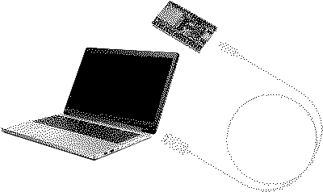

The Device is a critical intervention and artistic exploration
that takes the form of a Bluetooth jammer. It engages with
the increasing tendency in modern society to isolate
ourselves from the acoustic environment through wireless,
ever-smaller headphones and audio devices.

How to Upload Your Code to the ESP Board
1. Connect the ESP device to your PC using a USB cable.
Ensure the cable is a data cable and not just a charging cable.

2. Select the checkbox, click "Connect" and install Ble2: